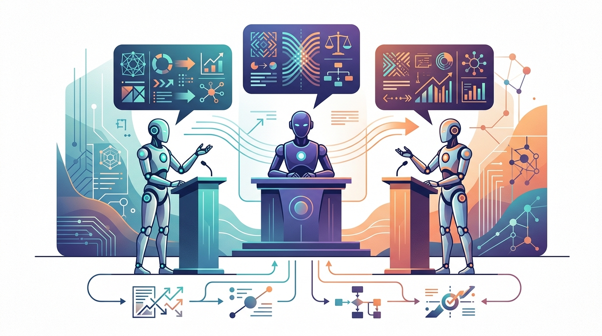
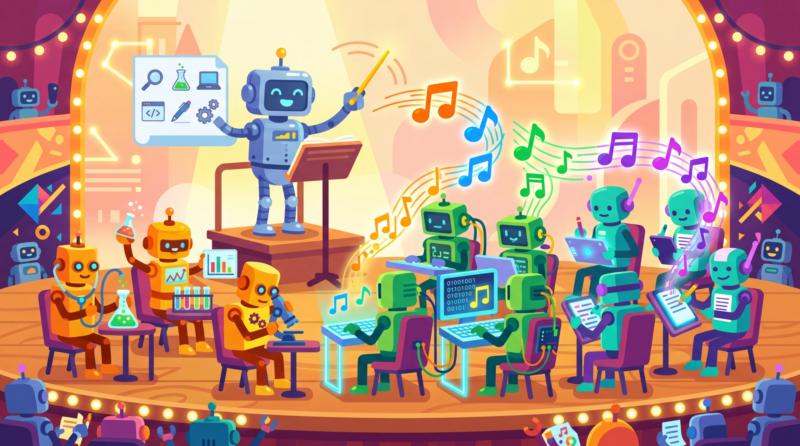
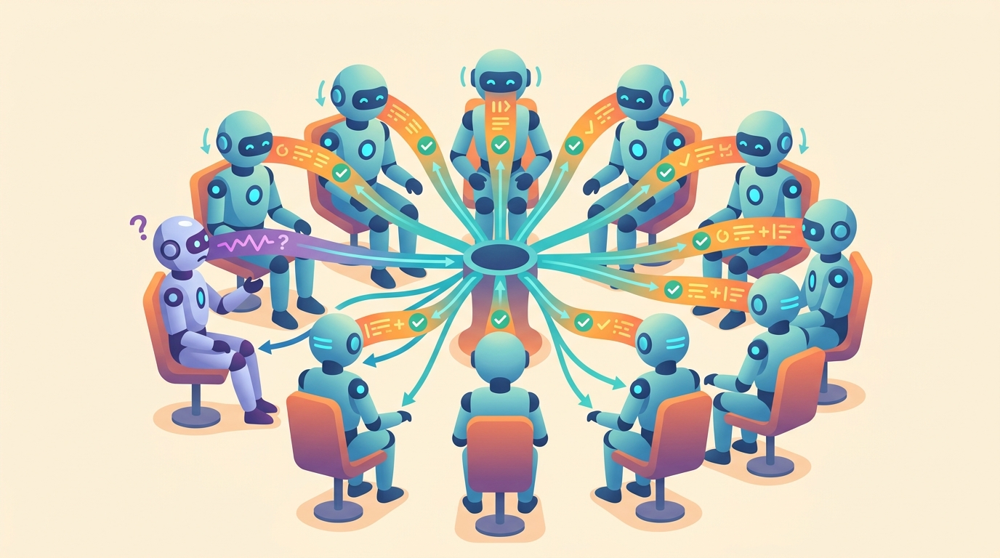
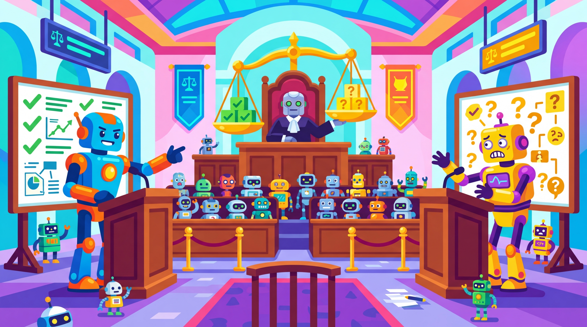

Architecture is the art of deciding which agent talks to which, and more importantly, which agent stays silent.
A Pattern-Recognizing AI Agent
Prerequisites
This section builds on the multi-agent foundations from Section 22.1 and the single-agent planning patterns from Section 21.3. Familiarity with LLM API patterns from Section 9.1 helps with understanding inter-agent message passing.
Multi-agent systems gain their power from the division of labor between specialized agents, but their effectiveness depends entirely on how those agents are organized and coordinated. Architecture patterns define the communication topology, decision authority, and information flow between agents. Choosing the right pattern determines whether your system produces robust, high-quality results or descends into incoherent chaos. Building on the framework landscape from Section 22.1, this section covers the four foundational patterns (supervisor, debate, pipeline, hierarchical), their implementation details, and the surprising ways that multi-agent deliberation can go wrong.

1. The Supervisor Pattern
In the supervisor pattern, a single "manager" agent receives the user's request, decomposes it into subtasks, delegates each subtask to a specialist agent, and synthesizes the results into a final response. The supervisor maintains full control over task routing, using the prompt engineering techniques from Chapter 10 to define each specialist's role. It can dynamically decide which agent to invoke based on intermediate results. This is the most common multi-agent pattern in production systems because it provides clear accountability and predictable behavior. Figure 22.2.1 shows the supervisor pattern.

The supervisor pattern is basically middle management, except the supervisor never schedules unnecessary meetings. Perhaps AI really is improving on the original. Code Fragment 1 below puts this into practice.

# Define SupervisorState; implement supervisor_node, route_to_agent # Key operations: agent orchestration from typing import TypedDict, Annotated, Literal from langgraph.graph import StateGraph, END from langgraph.graph.message import add_messages class SupervisorState(TypedDict): messages: Annotated[list, add_messages] next_agent: str task_complete: bool def supervisor_node(state: SupervisorState) -> dict: """The supervisor decides which agent to invoke next.""" response = supervisor_llm.invoke([ {"role": "system", "content": ( "You are a supervisor managing a team of agents: " "researcher, writer, reviewer. Decide which agent " "should act next, or return FINISH if the task is done. " "Respond with JSON: {\"next\": \"agent_name_or_FINISH\"}" )}, *state["messages"] ]) decision = parse_json(response.content) return { "next_agent": decision["next"], "task_complete": decision["next"] == "FINISH" } def route_to_agent(state: SupervisorState) -> Literal[ "researcher", "writer", "reviewer", "end" ]: if state["task_complete"]: return "end" return state["next_agent"] # Build the supervisor graph graph = StateGraph(SupervisorState) graph.add_node("supervisor", supervisor_node) graph.add_node("researcher", researcher_node) graph.add_node("writer", writer_node) graph.add_node("reviewer", reviewer_node) graph.set_entry_point("supervisor") graph.add_conditional_edges("supervisor", route_to_agent, { "researcher": "researcher", "writer": "writer", "reviewer": "reviewer", "end": END }) # All workers route back to supervisor for agent in ["researcher", "writer", "reviewer"]: graph.add_edge(agent, "supervisor") app = graph.compile()
2. The Debate Pattern
In the debate pattern, multiple agents with potentially different perspectives or approaches independently analyze the same problem, then engage in structured argumentation. A judge agent (or the user) evaluates the competing analyses and selects the best solution. This pattern is particularly valuable for tasks where diverse viewpoints improve quality, such as code review, risk assessment, and strategic planning. Code Fragment 2 below puts this into practice.

# Define DebateState; implement judge_node # Key operations: RAG pipeline, agent orchestration, evaluation logic import asyncio from typing import TypedDict, Annotated from langgraph.graph.message import add_messages class DebateState(TypedDict): messages: Annotated[list, add_messages] proposals: list[dict] # Each agent's position rebuttals: list[dict] # Responses to other positions verdict: str # Judge's final decision round_number: int async def parallel_proposals(state: DebateState) -> dict: """All debaters generate their initial positions in parallel.""" debaters = [ {"name": "Optimist", "stance": "Argue for the opportunity"}, {"name": "Skeptic", "stance": "Argue for caution and risks"}, {"name": "Pragmatist", "stance": "Focus on practical trade-offs"}, ] tasks = [generate_proposal(d, state) for d in debaters] proposals = await asyncio.gather(*tasks) return {"proposals": proposals} def judge_node(state: DebateState) -> dict: """An impartial judge evaluates all proposals and rebuttals.""" context = format_debate_transcript(state) verdict = judge_llm.invoke([ {"role": "system", "content": ( "You are an impartial judge. Evaluate the arguments presented, " "identify the strongest points from each side, and render a " "balanced verdict that synthesizes the best insights." )}, {"role": "user", "content": context} ]) return {"verdict": verdict.content}
Multi-agent debate is vulnerable to conformity effects. Research presented at ICLR 2025 demonstrated that LLM agents in multi-agent discussions tend to converge on a single answer even when their initial responses are diverse and correct. This "groupthink" phenomenon means that debate does not always improve accuracy. In some cases, the agents abandon correct individual answers in favor of a socially dominant but incorrect consensus. Monitor for conformity and consider preserving independent assessments alongside group deliberations.
3. The Pipeline Pattern
The pipeline pattern arranges agents in a linear sequence where each agent's output becomes the next agent's input. Unlike the supervisor pattern (which allows dynamic routing), pipelines follow a fixed order. This makes them simpler to reason about, test, and debug. Pipelines excel when the task naturally decomposes into sequential stages with clear handoff points. Figure 22.2.2 illustrates the pipeline pattern.
4. Hierarchical Agents
Hierarchical architectures extend the supervisor pattern by nesting supervisors within supervisors. A top-level orchestrator delegates to mid-level managers, who in turn delegate to specialized workers. This mirrors organizational structures and scales well for complex, multi-domain tasks. Each level of the hierarchy can use different models (see the model landscape in Chapter 7 for selection guidance), tools, and prompting strategies appropriate to its scope of responsibility. Code Fragment 3 below puts this into practice.
# implement orchestrator_node # See inline comments for step-by-step details. from langgraph.graph import StateGraph, END # Each team is itself a compiled graph (subgraph) research_team = build_research_subgraph() # Has its own supervisor writing_team = build_writing_subgraph() # Separate supervisor review_team = build_review_subgraph() # Separate supervisor # Top-level orchestrator manages the teams def orchestrator_node(state: OrchestratorState) -> dict: """Top-level orchestrator delegates to team supervisors.""" response = orchestrator_llm.invoke([ {"role": "system", "content": ( "You manage three teams: research, writing, and review. " "Decide which team should work next. Each team has its " "own manager who handles internal delegation." )}, *state["messages"] ]) return {"next_team": parse_decision(response)} # Compose subgraphs into the top-level graph top_graph = StateGraph(OrchestratorState) top_graph.add_node("orchestrator", orchestrator_node) top_graph.add_node("research_team", research_team) top_graph.add_node("writing_team", writing_team) top_graph.add_node("review_team", review_team) # ... add conditional edges for routing
5. Shared Memory and Message Passing
Multi-agent systems require mechanisms for agents to share information. The two primary approaches are shared memory (all agents read and write to a common state store) and message passing (agents communicate by sending messages through channels). Each has trade-offs that affect system design.
| Aspect | Shared Memory | Message Passing |
|---|---|---|
| Coordination | Implicit via state reads/writes | Explicit via messages |
| Coupling | Higher (shared data structure) | Lower (interface-based) |
| Debugging | Inspect state at any point | Trace message history |
| Scalability | Contention on shared state | Naturally distributable |
| Consistency | Immediate (same state object) | Eventual (async delivery) |
| Framework Example | LangGraph TypedDict state | AutoGen agent messages |
Most production systems use a hybrid approach. LangGraph, for instance, uses shared state as the primary coordination mechanism, but agents effectively communicate through messages stored in that state. The practical choice is not "shared memory versus message passing" but rather "how much of the communication should be structured state versus free-form messages." Structured state fields (like task_complete or next_agent) provide reliable coordination signals, while message lists carry rich conversational context.
6. Conformity Effects in Multi-Agent Systems
A critical finding from recent research is that LLM agents in multi-agent discussions are susceptible to conformity effects analogous to human groupthink. When agents share their outputs with each other, they tend to converge on a single answer regardless of whether that answer is correct. This is especially problematic in debate and consensus-based architectures. The alignment training (Chapter 16) that makes models helpful also makes them agreeable, which amplifies conformity in multi-agent settings.
6.1 The ICLR 2025 Groupthink Finding
Research presented at ICLR 2025 studied multi-agent debate systems and found that when LLM agents are asked to discuss and reach consensus, they frequently abandon correct individual answers in favor of incorrect but socially dominant positions. The study showed that agents exhibited classic conformity behavior: they changed their answers to match the majority even when their original reasoning was sound. This effect was more pronounced with certain models and became worse as the number of discussion rounds increased. Code Fragment 4 below puts this into practice.
# Mitigation: Preserve independent assessments alongside group debate class ConformityAwareDebate: def __init__(self, agents: list, judge_llm): self.agents = agents self.judge = judge_llm async def run(self, question: str) -> dict: # Step 1: Get independent answers (no cross-contamination) independent = await asyncio.gather(*[ agent.answer_independently(question) for agent in self.agents ]) # Step 2: Run debate rounds (agents see each other's answers) debate_transcript = await self.run_debate_rounds( question, independent, max_rounds=2 ) # Step 3: Judge sees BOTH independent and post-debate answers verdict = await self.judge.invoke({ "independent_answers": independent, "debate_transcript": debate_transcript, "instruction": ( "Compare independent answers with post-debate positions. " "Flag any cases where agents changed correct answers to " "match the group. Weight independent reasoning heavily." ) }) return {"independent": independent, "verdict": verdict}
Practical mitigations for conformity effects include: (1) always preserving and presenting independent assessments to the judge alongside debate outputs, (2) limiting debate rounds to prevent excessive convergence, (3) using diverse model types (different providers, sizes, or temperatures) to maintain genuine diversity of reasoning, and (4) explicitly instructing the judge to watch for conformity patterns where agents abandon well-reasoned positions.
7. Pattern Selection Guide
| Pattern | When to Use | Risks |
|---|---|---|
| Supervisor | Dynamic task routing, clear accountability needed | Supervisor becomes bottleneck; single point of failure |
| Debate | Multiple valid approaches; need diverse perspectives | Conformity/groupthink; higher token costs |
| Pipeline | Sequential stages with clear handoffs | No dynamic rerouting; errors compound downstream |
| Hierarchical | Complex, multi-domain tasks; large agent teams | Coordination overhead; deep nesting slows iteration |
Knowledge Check
1. In the supervisor pattern, what happens when the supervisor itself makes a mistake in routing?
Show Answer
2. Why does the debate pattern generate higher token costs than the supervisor pattern?
Show Answer
3. What is the key difference between shared memory and message passing for agent coordination?
Show Answer
4. How does the ICLR 2025 groupthink research affect how we should design multi-agent debate systems?
Show Answer
5. When would you choose a hierarchical architecture over a flat supervisor pattern?
Show Answer
Supervisor Pattern for Insurance Claims Processing
Who: AI engineering team at a mid-size insurance company
Situation: Claims processing required extracting data from photos, matching policy terms, checking for fraud indicators, and drafting settlement recommendations.
Problem: A single monolithic agent struggled with the variety of sub-tasks and frequently produced inconsistent outputs when switching between document analysis, policy lookup, and financial calculation.
Dilemma: A pipeline pattern would be simpler but could not handle cases where fraud detection needed to loop back to request additional documents. A fully decentralized swarm risked losing coordination.
Decision: The team implemented a supervisor pattern with four specialized worker agents: document extraction, policy matching, fraud screening, and settlement drafting.
How: The supervisor agent received each claim, routed it through workers in the appropriate order, and conditionally looped back to document extraction when the fraud screener flagged missing information. Each worker had a focused system prompt and dedicated tools.
Result: Claims processing time decreased by 70%, and the fraud detection rate improved by 25% because the supervisor could dynamically request additional evidence. The centralized routing also simplified audit logging for regulatory compliance.
Lesson: The supervisor pattern excels when sub-tasks require different specializations and the workflow needs dynamic routing with clear accountability for each decision.
Key Takeaways
- The supervisor pattern is the most common production choice: it centralizes routing decisions, provides clear accountability, and is straightforward to debug and monitor.
- The debate pattern improves quality through diverse perspectives but is vulnerable to conformity effects where agents abandon correct answers to match the group consensus.
- The pipeline pattern offers simplicity and predictability: fixed sequential stages with clear handoffs are easy to test, but lack the flexibility to reroute dynamically.
- Hierarchical architectures scale to complex, multi-domain tasks by nesting supervisors within supervisors, but add coordination overhead at each level.
- Conformity effects are a real risk: always preserve independent assessments, limit debate rounds, use diverse models, and instruct judges to watch for groupthink patterns.
Multi-agent coordination is evolving rapidly beyond static topologies. Recent work on adaptive multi-agent architectures (2024-2025) explores systems that dynamically reconfigure their coordination pattern at runtime. For example, a system might start with a pipeline pattern for efficiency, detect quality issues in intermediate outputs, and switch to a debate pattern for higher reliability on specific subtasks. Research on LLM-based conformity (ICLR 2025) is also driving new "diversity-preserving" debate protocols that explicitly penalize agents for abandoning well-reasoned independent positions. Meanwhile, Google's A2A protocol (Section 21.5) promises to make cross-framework agent coordination practical, enabling teams to compose agents built with different frameworks into unified pipelines.
What's Next?
In the next section, Section 22.3: Agentic Workflows & Pipelines, we examine agentic workflows and pipelines, connecting agents into reliable, observable production systems.
References & Further Reading
Introduces a multi-agent framework where agents follow standardized operating procedures like a software company. Demonstrates how role specialization improves output quality. Key reference for hierarchical multi-agent design.
Shows that having multiple LLMs debate improves factual accuracy and reasoning. A compelling case for adversarial multi-agent patterns. Essential reading for teams implementing debate-based systems.
Introduces role-playing between agents to explore cooperative and competitive dynamics. Provides insights into emergent agent behaviors. Foundational for understanding agent communication patterns.
Explores how multi-agent debate can encourage creative and diverse problem-solving. Demonstrates that structured disagreement leads to better solutions. Useful for teams designing brainstorming or ideation systems.
A platform for studying multi-agent collaboration with dynamic team formation. Reveals how group dynamics emerge in agent populations. Valuable for researchers studying agent coordination.